Phần II · Bài 12 — Các nút đệ quy với động lực học phong phú (Del-Moral-Hernandez)
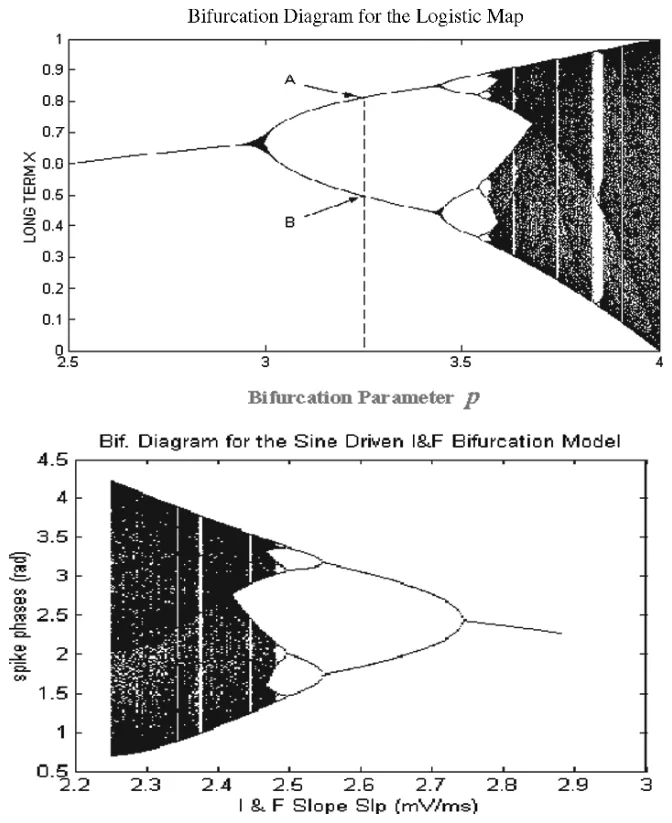
Hình 4 Biểu đồ phân nhánh thứ nhất tương ứng với ánh xạ logistic, được thảo luận chi tiết trong phần chính văn. Biểu đồ phân nhánh thứ hai đề cập đến một nút đệ quy khác; nó cho thấy sự đa dạng của các pha phát xung trong một bộ dao động thần kinh được điều khiển tuần hoàn dựa trên nơ-ron tích phân và phát xung (integrate-and-fire), như một hàm theo độ dốc của bộ tích phân của nó [14]. Trong biểu đồ thứ nhất, tham số phân nhánh càng lớn thì hành vi của chuỗi thời gian do nút đệ quy tạo ra càng hỗn loạn. Trong biểu đồ thứ hai, tham số phân nhánh càng lớn thì hành vi của nút càng có trật tự về mối quan hệ giữa các pha của các xung liên tiếp do nơ-ron tích phân và phát xung tạo ra. Điều này bắc cầu giữa các nút đệ quy và các nơ-ron phát xung, vốn là một lĩnh vực đang phát triển nhanh chóng trong mạng thần kinh nhân tạo. Ngoài ra, cầu nối này giữa các pha phát xung và RPE có thể liên quan đến các ánh xạ đệ quy tổng quát: [7] mô tả các hiện thực hóa điện tử của các ánh xạ đệ quy tùy ý dựa trên các nơ-ron tích phân và phát xung.
2.3 Cấu trúc Ghép nối và Sự Nổi lên của Hành vi Tập thể: Động lực học Cục bộ so với Toàn cục
Trong các mạng gồm nhiều RPE, các nút đệ quy tương tác thông qua sự ghép nối với các nơ-ron lân cận. Toàn bộ mạng tiến hóa thành các mẫu không gian – thời gian tập thể. Hình 5 biểu diễn cấu trúc của một mạng nhỏ gồm các nút đệ quy có kết nối đầy đủ giữa chúng, trong đó hoạt động xn của mỗi nút ảnh hưởng đến các phép đệ quy của tất cả các nút khác thông qua những thay đổi trong các tham số p của chúng. Mỗi vòng tròn ‘L1 đến
L4’ đại diện cho một nút đệ quy phân nhánh, hay một ánh xạ logistic, trong nhiều nghiên cứu nguyên mẫu [4, 6, 12].
Các đặc điểm chính của các nút RPE, chẳng hạn như hiện tượng học của các điểm hút và điểm đẩy, và sự đa dạng cao của các điểm hút, phản ánh ở cấp độ mạng. Các hiện tượng tập thể đa dạng nổi lên trong các mạng gồm các phép đệ quy ghép nối, chẳng hạn như các hiện tượng sau:
– Phân cụm hoạt động của các nút, tức là một số nút trong mạng tiến hóa theo dạng tương tự hoặc giống hệt nhau, tương phản với hành vi của phần còn lại của các nút. Điều gì chính xác đặc trưng cho một cụm phụ thuộc vào mục tiêu của một thí nghiệm / mô hình hóa nhất định hoặc vào chiến lược mã hóa thông tin được giả định cho mạng đang nghiên cứu. Cụm có thể được đặc trưng ví dụ bởi chu kỳ của các quỹ đạo tuần hoàn của biến trạng thái, bởi biên độ chu kỳ của chúng, hoặc thậm chí bởi pha chu kỳ của chúng [17, 26].
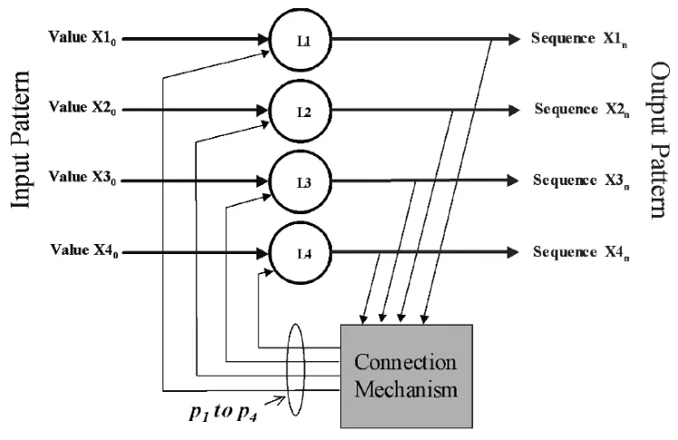
Hình 5 Một mạng nhỏ gồm 4 RPE với kết nối đầy đủ giữa tất cả các nút. Mỗi vòng tròn L1 đến L4 đại diện cho một phép đệ quy phân nhánh (ví dụ: một ánh xạ logistic). Kết nối giữa các nút thúc đẩy những thay đổi trong các tham số phân nhánh của các nút đệ quy (các tham số p1 đến p4). Những thay đổi này được điều khiển bởi hoạt động của toàn bộ mạng [12]
– Đồng bộ hóa chu kỳ của các RPE (hay ‘khóa pha’). Trong loại hiện tượng tập thể này, các hoạt động tuần hoàn của các cặp nút có cùng chu kỳ và chúng hoạt động với pha tương đối không đổi [4, 17]. Loại hành vi này rất quan trọng đối với sự hình thành các kiến trúc liên kết được thảo luận sau này [4, 6, 12]. – Các điểm hút đa chiều (còn gọi là điểm hút không gian – thời gian). Những hiện tượng vĩ mô này rất quan trọng đối với sự liên kết, nhận dạng mẫu và ra quyết định. Trong hành vi điểm hút đa chiều, tương tự như các điểm hút và điểm đẩy ở cấp độ một nút đơn lẻ, chúng ta quan sát thấy sự tiến hóa của hoạt động của mạng hướng tới một tập hợp hạn chế các phương thức động lực học, vốn ưu tiên nổi lên trong các cấu trúc ghép nối. Sự tiến hóa này thường bao gồm hoạt động hỗn loạn ban đầu, theo sau là sự xấp xỉ dần dần đến một chu trình giới hạn có trật tự. Điểm hút này đại diện cho một ký ức được lưu trữ trong các tác vụ liên kết, hoặc một nhãn lớp trong các tác vụ nhận dạng mẫu [6, 17].
Trong số các ưu điểm khác, các mạng liên kết thuộc loại này hoạt động tốt hơn trong việc khôi phục mẫu so với các mạng thần kinh nhân tạo truyền thống có cùng chức năng (như sẽ thảo luận sau). Chúng cũng sử dụng động lực học phức tạp và sự hỗn loạn, điều này giúp tăng cường việc khám phá vũ trụ các biến trạng thái, trong quá trình tìm kiếm các mẫu được lưu trữ và các điểm hút tương ứng [6, 14].
Trong các mạng gồm các RPE ghép nối được sử dụng để hiện thực hóa các bộ nhớ liên kết, chiến lược xác định các trọng số synap dựa trên học tập Hebb có giám sát [20, 22]. Trong các cấu trúc liên kết (được đề cập trong Mục 3.2), các ký ức cần lưu trữ được sử dụng để xác định các điểm tương đồng và khác biệt dự kiến (tức là các tương quan toán học) giữa các hoạt động của các nút thần kinh. Do đó, các mẫu huấn luyện, hay các ký ức được lưu trữ, xác định một vũ trụ gồm các mẫu không gian – thời gian tập thể được mạng mô hình hóa trong quá trình liên kết. Các mẫu của tập huấn luyện này được sử dụng để ước lượng các điểm tương đồng theo cặp giữa các nút trong mạng: mỗi trọng số synap wij liên kết các nút i và j được điều chỉnh để biểu diễn sự tương quan giữa các hoạt động của các nút cụ thể này.
Ký hiệu cho các chỉ số dưới trong trọng số kết nối wij như sau: i là nơ-ron đích (nơ-ron nhận kích thích ở synap i j), và j là nơ-ron nguồn (nơ-ron tạo ra kích thích); trọng số synap wij đề cập đến thông tin ‘đi đến nút i, xuất phát từ nút j’. Một biểu thức Hebb điển hình cho các trọng số kết nối có thể thấy trong (6).
M
wij = (ξi,μ.ξ j,μ). (6)
μ=1
Trong (6), i và j đại diện cho các nút liên quan, và ξμ đại diện cho một trong M ký ức (chuỗi nhị phân) được lưu trữ trong mạng liên kết. Mỗi số hạng ξi,μ hoặc ξ j,μ đại diện cho một bit cụ thể của một ký ức ξμ nhất định.
Một khi độ mạnh kết nối cho tất cả các cặp nơ-ron được xác định theo (6), chúng có thể được sử dụng để xác định cách các kích thích đến từ tất cả các nút tạo nên mạng được tích hợp và ảnh hưởng cụ thể đến sự tiến hóa của mỗi nút. Phương trình (7) dưới đây biểu diễn một cách tổng quát sự tích hợp và ghép nối này cho một nút đích i nhất định: dựa trên hoạt động của mạng và các trọng số kết nối wij , chúng ta có sự điều khiển tham số phân nhánh pi của một nút đích i:
pi,n = f (wij ; x j,n). (7)
Trong (7), f đại diện cho một hàm tổng quát của nhiều biến (wij và x j,n), hàm này phải được chọn lựa thích hợp để hình thành hành vi tập thể mong muốn cho mạng. Các wij là các kết nối synap từ các nơ-ron lân cận j, và x j,n là đầu ra của chúng tại bước thời gian n.
Phương trình (8) dưới đây là một trường hợp cụ thể của (7), đối với dạng mô hình hóa tích hợp thông tin phổ biến nhất được sử dụng trong các mạng thần kinh: một mô hình tổ hợp tuyến tính các đầu vào x j,n, theo sau bởi một hàm g.
pi,n = g( wij .x j,n). (8)
j
Lưu ý rằng trong khi f ở (7) trước đó là một hàm của nhiều biến, thì g trong (8) là một hàm của một biến duy nhất. Tổ hợp tuyến tính j wij .x j,n biểu diễn quá trình xử lý synap-đuôi gai, và nó đóng vai trò là đối số vô hướng của hàm g, hàm xác định cách tổng kích thích mà nút i nhận được điều khiển tham số phân nhánh của nó.
Tổng có trọng số của các kích thích được sử dụng trong (8) dựa trên thực tế là, trong các nơ-ron thực, một số hoạt động sau synap cùng góp phần vào sự khử cực của màng gò sợi trục (axon hillock), thông qua một quá trình chồng chất tuyến tính các dòng điện được tạo ra tại các vị trí synap khác nhau [28]. Mô hình hóa tuyến tính này theo truyền thống được thực hiện trong việc biểu diễn quá trình xử lý synap-đuôi gai ở các nơ-ron mô hình, và nó được duy trì ở đây trong bối cảnh các nút đệ quy ghép nối.
2.4 Cảm nhận Thông tin Phụ thuộc Thời gian
Cấu trúc trong Hình 5 phù hợp cho các mạng điểm hút. Trong loại mạng này, thông tin đầu vào tương ứng với cấu hình ban đầu của các biến trạng thái của mạng, và thông tin đầu ra được cho bởi cấu hình động (điểm hút) nổi lên trong hoạt động của mạng về dài hạn. Cấu trúc trong Hình 5 có thể được mở rộng để giữ lại các thuộc tính của mạng điểm hút, đồng thời kết hợp các yếu tố mô hình hóa phức tạp hơn, bao gồm các mẫu đầu vào biến thiên theo thời gian và các dị liên kết (hetero-associations) [12, 30, 38]. Điều này có thể đạt được bằng một sửa đổi đơn giản: một số nút trong mạng, giả sử L1 và L2, có chức năng độc quyền là biểu diễn thông tin đầu vào. Các hoạt động x1 và x2 của các ‘nút cảm giác’ này không bị ảnh hưởng bởi các nút khác, mà thay vào đó phụ thuộc hoàn toàn vào thông tin bên ngoài. Các nút này đóng vai trò là các đơn vị đầu vào. Chúng là các bộ dao động tự trị không giám sát hoạt động của mạng, cũng không bị ảnh hưởng bởi nó, mà chúng chỉ tạo ra các tín hiệu nuôi mạng. Không cần phản hồi tới các nút L1 và L2 (các đường p1 và p2 trong hình không có trong cấu trúc đã sửa đổi này); phần duy nhất của mạng vẫn nhận phản hồi là L3 và L4. Tuy nhiên, đầu ra của tất cả bốn nút L1 đến L4 đều góp phần điều khiển p3 và p4.
Với sự sửa đổi kiến trúc được mô tả, chúng ta có thể có sự pha trộn giữa chức năng tự liên kết, được hiện thực hóa thông qua các tự kết nối của các bộ dao động ghép nối L3 và L4 (trọng số synap w34 và w43), và chức năng dị liên kết, được hiện thực hóa thông qua các kết nối giữa các bộ dao động tự trị L1 và L2 với các nút liên kết L3 và L4 (trọng số synap w31, w32, w41 và w42). Tất nhiên, kiến trúc rất nhỏ này (hai nút cảm giác và hai nút liên kết) chỉ được sử dụng ở đây để giải thích khái niệm về các nút cảm giác. Các ứng dụng thực tế của cấu trúc mô hình hóa này sử dụng số lượng nút lớn hơn [6, 12].
2.5 Mã hóa Thông tin Thông qua Các Điểm hút Không phải Điểm cố định Toàn cục
Các cấu trúc gồm các nút đệ quy ghép nối như cấu trúc đã thảo luận trước đây (Hình 5) có thể thể hiện các mẫu không gian – thời gian tập thể ưu tiên. Điều này có thể được sử dụng để biểu diễn thông tin có ý nghĩa. Hàm ý trong chiến lược này là việc mã hóa thông tin thông qua các điểm hút động. Trong Hình 6, chúng ta có một minh họa mang tính sơ đồ hơn (so với Hình 5) về một mạng gồm các phép đệ quy ghép nối, hay các bộ dao động đệ quy. Nó nhấn mạnh bản chất động của các mạng RPE và mối quan hệ giữa các chu trình giới hạn trong các đầu ra không gian – thời gian với thông tin đầu ra tương ứng. Ở đây chúng ta giả định rằng mình đang xử lý thông tin thị giác, chỉ để tạo điều kiện cho việc minh họa các khái niệm.
Việc mã hóa thông tin trong các chu trình giới hạn của các mạng gồm các phần tử đệ quy ghép nối có thể xảy ra dưới nhiều dạng khác nhau, ví dụ:
– Mã hóa các đại lượng tương tự dựa trên biên độ dao động của các biến trạng thái x (điều này liên quan đến các giá trị A và B trong các ví dụ của Mục 2.2); – Mã hóa các đại lượng tương tự bằng cách sử dụng các giá trị của chuỗi thời gian xn; – Mã hóa các lớp rời rạc bằng cách sử dụng chu kỳ của sự tuần hoàn trong các quỹ đạo đóng; – Mã hóa các lớp rời rạc bằng cách sử dụng pha của sự tuần hoàn; – Các dạng hỗn hợp liên quan đến nhiều chu kỳ, nhiều biên độ dao động và nhiều pha tuần hoàn.
Hình 6 Minh họa một mạng gồm các phép đệ quy ghép nối (hoặc bộ dao động) tạo ra các mẫu không gian – thời gian toàn cục nhất quán nổi lên trong quá trình hoạt động của mạng về dài hạn, tức là các chu trình giới hạn. Do đó, các chu trình giới hạn biểu diễn thông tin (phỏng theo [10])
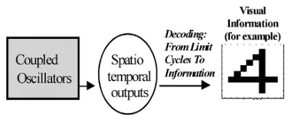
Lưu ý rằng nhiều điều trên có liên quan chặt chẽ đến các hiện tượng đồng bộ hóa trong các quần thể nơ-ron phát xung và sự phân cụm hoạt động thần kinh. Sự đồng bộ hóa và pha phát xung trong các mạng thần kinh này cũng được sử dụng để biểu diễn thông tin thay vì các nơ-ron mô hình truyền thống sử dụng khối lượng hoạt động thần kinh (tần số điện thế hoạt động).
Trong Hình 7, chúng tôi minh họa, thông qua một công cụ gọi là Biểu đồ Tập Giới hạn (Limit Set Diagram), hoạt động của một mạng gồm 20 nút đệ quy ghép nối. Hầu hết chúng hoạt động với cùng một chu kỳ (chu kỳ-2; chỉ có nơ-ron số 18 là không) và với cùng biên độ tuần hoàn ( |A −B| ). Một số nút dao động với một pha nhất định và những nút khác với pha ngược lại. Ở đây chúng tôi mã hóa thông tin nhị phân (hoặc thông tin logic đa chiều, vì chúng ta có 20 nút) bằng cách sử dụng pha của sự tuần hoàn.
Hình 7 biểu diễn một số loại thông tin, liên quan đến các phương pháp mã hóa khác nhau được liệt kê ở trên. Các giá trị xn mà chu trình giới hạn của mỗi nút đệ quy đi qua được biểu diễn bằng các chấm ngay phía trên mỗi số thứ tự nút. Pha tuần hoàn của mỗi quỹ đạo tuần hoàn được biểu diễn thông qua các vòng tròn xung quanh các giá trị xn cụ thể được đi qua tại một thời điểm lấy mẫu nhất định (chúng ta quan sát từ các vòng tròn đó các pha đối lập đang được sử dụng để biểu diễn các số không và số một). Chúng ta cũng có, một cách gián tiếp, một dấu hiệu về mức độ trật tự hoặc hỗn loạn liên quan đến mỗi nút, vì các tham số phân nhánh của chúng, các pi, được biểu diễn thông qua các hình tam giác. Biên độ của các dao động tuần hoàn cũng xuất hiện trong biểu đồ này (khoảng cách |A −B|), mặc dù chúng không được khai thác để mã hóa thông tin trong trường hợp này.
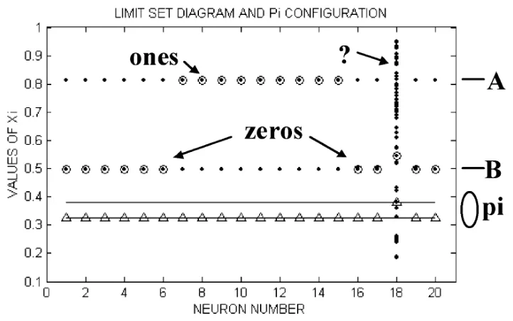
Hình 7 Minh họa việc mã hóa thông tin nhị phân thông qua pha của sự tuần hoàn định kỳ, trong một mạng gồm 20 nút đệ quy ghép nối. Trong ‘Biểu đồ Tập Giới hạn’ này, trục hoành biểu diễn 20 nơ-ron trong mạng (i chạy từ 1 đến 20). Các chấm và các chấm được khoanh tròn ngay phía trên mỗi giá trị của i biểu diễn mẫu không gian – thời gian của chu kỳ-2 đang được thực hiện bởi các biến trạng thái xi về dài hạn. Các vòng tròn xung quanh các chấm biểu thị pha tuần hoàn của mỗi nút. Các hình tam giác biểu diễn các giá trị của các tham số pi (giá trị của chúng chia cho mười, để tiện cho tỷ lệ) [11]. Nút 18 là nút duy nhất vẫn đang thực hiện tìm kiếm hỗn loạn (được gắn thẻ bằng dấu chấm hỏi), và chưa ổn định trong một chu trình chu kỳ-2
Có lẽ một trong những khác biệt quan trọng nhất giữa các mạng thần kinh cấu thành từ các nút đệ quy và các nơ-ron mô hình nhân tạo truyền thống thường được sử dụng trong mạng thần kinh là thực tế rằng các nút RPE riêng lẻ có các điểm hút động làm dạng hoạt động tự nhiên của chúng. Điều này khác biệt đáng kể so với các mạng cấu thành từ các nơ-ron mô hình sigmoid truyền thống hoạt động với các điểm hút cố định [20]. Một khía cạnh thú vị liên quan đến sự khác biệt này đề cập đến số lượng trạng thái mà mỗi lớp mạng có thể thực hiện. Có thể chứng minh rằng số lượng trạng thái tuần hoàn phân biệt, CycSN,L, đối với một mạng có N nút và các giá trị đầu ra với L mức có thể phân biệt được, được cho bởi (9), trong khi số lượng trạng thái cho một mạng tương tự (tức là cùng N nút và L mức đầu ra có thể phân biệt được) hoạt động với các điểm hút cố định,
FixSN,L , được cho bởi (10).
L
(1/(L −m)))N. (9)
CycSN,L = (L
m=0
FixSN,L = L N. (10)
Các phép tính đơn giản sử dụng hai phương trình này cho thấy giá trị của CycSN,L tăng nhanh hơn nhiều so với giá trị của FixSN,L, ngay cả đối với các mạng có số lượng nút (N) vừa phải và số lượng mức đầu ra (L) vừa phải. Ví dụ, khi chúng ta xem xét một mạng cực kỳ đơn giản chỉ gồm ba nút và ba mức đầu ra có thể phân biệt được, CycSN,L = 4096, trong khi FixSN,L = 27. Khi số lượng nút N và số lượng mức L tăng lên, sự khác biệt giữa các đại lượng CycSN,L và FixSN,L như vậy thậm chí còn tăng nhiều hơn. Điều này chỉ ra rằng các mạng hoạt động với các chu trình để biểu diễn thông tin có số lượng các mẫu đầu ra phân biệt lớn hơn nhiều so với các mạng hoạt động với các điểm hút cố định.
Điều quan trọng cần đề cập là các giá trị CycSN,L và FixSN,L phải được hiểu là các giới hạn trên, chứ không phải là chỉ báo chính xác về số lượng trạng thái có thể đạt được bởi mỗi mạng thuộc các lớp này. Tuy nhiên, sự tương phản rõ rệt giữa hai giới hạn trên này (CycSN,L và FixSN,L) chỉ ra một sự khác biệt quan trọng giữa hai lớp mạng.
3 Các Công cụ Phân tích trong Động lực học Phi tuyến và Mô hình hóa Hoạt động Thần kinh và Não bộ
3.1 Các Công cụ Cổ điển và Mới Có liên quan
Trước tiên, chúng tôi đề cập ngắn gọn một số công cụ cổ điển trong động lực học phi tuyến (chúng không được trình bày chi tiết ở đây; xem ví dụ [21] và [27]) và chúng tôi làm rõ cách các công cụ cổ điển này hữu ích trong các kiến trúc với các nút đệ quy. Sau đó, chúng tôi đề cập đến một số công cụ mới được phát triển cho các nhu cầu cụ thể trên các mạng RPE; các công cụ mới này được giải thích chi tiết hơn trong các phần cụ thể của chương.
Các công cụ liên quan cơ bản nhất có lẽ là Ánh xạ Hồi quy (Return Maps), để mô tả đồ họa các phép đệ quy tham số Rp, như trong Hình 1, và Biểu đồ Mạng nhện (Web Diagrams) [27]. Hai công cụ này cùng nhau là những công cụ thực hành quan trọng để hiểu hiện tượng học của các điểm hút và điểm đẩy. Chúng đặc biệt hữu ích khi có sẵn thông qua các môi trường tính toán cho các mô phỏng tương tác, khi cho phép nghiên cứu hiện tượng học của các phép đệ quy và quan sát các điểm hút đang nổi lên.
Đặc trưng hóa toán học của động lực học đệ quy có thể được thực hiện thông qua Số mũ Lyapunov và Thước đo Entropy [21, 27]. Công cụ đầu tiên hữu ích trong việc thiết kế các điểm hút để biểu diễn thông tin: các giá trị thấp của số mũ Lyapunov có tác động trực tiếp đến tốc độ ổn định của các điểm hút, và do đó đến tốc độ thực hiện một chức năng nhất định, chẳng hạn như khôi phục mẫu hoặc nhận dạng mẫu. Các giá trị lớn của số mũ Lyapunov và các giá trị lớn của Entropy là những thành phần tốt cho việc khám phá phong phú không gian trạng thái; điều này rất đáng quan tâm cho việc tìm kiếm các ký ức được lưu trữ và các mẫu được nhúng [6].
Biểu đồ Phân nhánh (Mục 2.2) tóm tắt sự phong phú về mặt động lực học của các nút và rất hữu ích để xác định các đặc điểm liên quan của nó. Với chúng, chúng ta có thể thấy những dải tham số nào của các nút là phù hợp cho hai trạng thái ‘vĩ mô’ bổ sung cho nhau: 1) tìm kiếm rộng các mẫu và 2) các quỹ đạo có trật tự ổn định để biểu diễn thông tin (hai trạng thái này được thảo luận chi tiết hơn trong Mục 3.2). Phân tích Tính ổn định, được mô tả trong Mục 2.2, là một công cụ cổ điển có vai trò công cụ trong việc thiết kế các điểm hút tuần hoàn (được sử dụng để biểu diễn thông tin) và cho các nghiên cứu về sự phân nhánh trong các nút đệ quy.
Các công cụ và phương pháp cổ điển được đề cập ở trên cho phép chúng ta nắm bắt nhiều khía cạnh quan trọng của các mạng có các nút mang động lực học phong phú. Tuy nhiên, các phần mở rộng và công cụ bổ sung vẫn cần thiết để mô hình hóa và đặc trưng hóa các kiến trúc thần kinh RPE. Trong số những công cụ quan trọng có:
– Biểu đồ Tập Giới hạn (Limit Set Diagrams), như trong Hình 7, để biểu diễn các điểm hút và hành vi dài hạn đa chiều trong các mạng gồm các nút đệ quy ghép nối [11, 17]. – Đường cong Hồ sơ Sai số (Error Profile Curves), hay Biểu đồ Sai số (Error Plots), để đặc trưng hóa hiệu suất của các mạng liên kết. Chúng được thảo luận trong Mục 3.3 [6]. – Biểu đồ Tần suất Đồ họa (Graphic Histograms), để đặc trưng hóa cảnh quan điểm hút. Chúng được thảo luận trong Mục 3.4 [13].
Chi tiết hơn về ba công cụ này sẽ xuất hiện trong phần còn lại của chương, nơi sẽ thấy rõ cách chúng có thể giúp ích trong các khía cạnh khác nhau của việc thiết kế và phân tích các kiến trúc thần kinh mô hình hóa.
3.2 Bộ nhớ Liên kết, Nhận dạng Mẫu, và Sự Pha trộn giữa Trật tự và Động lực học Phức tạp
Trong phần này, chúng tôi đề cập đến một lớp chức năng quan trọng có thể được mô hình hóa thông qua các kiến trúc dựa trên các mạng nút đệ quy: sự liên kết. Cụ thể, chúng tôi khám phá sự tự liên kết trên thông tin logic đa chiều (hoặc các chuỗi nhị phân). Để tạo điều kiện minh họa cho loại chức năng này, chúng tôi xem xét các ký ức được lưu trữ không phải dưới dạng các chuỗi thông tin nhị phân trừu tượng hay các chuỗi đại lượng logic, mà dưới dạng các hình ảnh nhị phân. Điều này làm cho mô tả trở nên trực quan hơn, mặc dù cùng những kết quả thu được cho hình ảnh nhị phân sẽ áp dụng cho bất kỳ loại thông tin nào được mô tả bằng chuỗi nhị phân, bao gồm thông tin logic, gắn nhãn lớp và thông tin quyết định.
Hình 8 minh họa chức năng của các bộ nhớ liên kết thuộc loại này. Từ các phiên bản bị biến dạng của các mẫu nhị phân được lưu trữ trong bộ nhớ liên kết, chúng ta khôi phục các mẫu gốc mà không bị biến dạng. Chức năng này được gọi là tự liên kết, hay truy xuất theo nội dung (content addressable retrieval), và nó là mục tiêu của mạng thần kinh cổ điển do John Hopfield phát triển trong tài liệu tham khảo [22].
Các kết quả thành công về mô hình hóa các mạng liên kết thông qua các RPE ghép nối được mô tả trong [4, 6, 8, 10] và [12], luôn sử dụng các dạng vận hành mạng với một chiến lược chung: pha trộn giữa hỗn loạn và trật tự, và chuyển đổi giữa một trạng thái này (hỗn loạn) sang trạng thái kia (trật tự) theo nhu cầu tìm kiếm mẫu hoặc biểu diễn thông tin.
Trong các giai đoạn đầu của quá trình tìm kiếm một mẫu được lưu trữ, động lực học phong phú được thực hiện thông qua các giá trị p cao. Trong quá trình tiến hóa hướng tới một điểm hút mã hóa ký ức được lưu trữ (hoặc nhãn lớp, nếu chúng ta đang mô hình hóa nhận dạng mẫu), các nút RPE thực hiện nhiều phương thức động lực học khác nhau, có thể với các chu kỳ khác nhau và hành vi hỗn loạn, và các biến trạng thái x của chúng có thể thay đổi liên tục trên không gian trạng thái.
Trong các giai đoạn cuối của quá trình khôi phục mẫu, chúng ta có các giá trị p thấp và chỉ những điểm hút có chu kỳ thấp biểu diễn thông tin mới được thực hiện.
Theo ý tưởng chung này, (11) và (12) xác định một cơ chế tìm kiếm ký ức (hoặc tìm kiếm mẫu) với sự pha trộn giữa hỗn loạn và trật tự: như được trình bày chi tiết dưới đây, việc điều khiển các tham số phân nhánh pi được mạng chỉ huy một cách linh hoạt, và việc chuyển đổi giữa động lực học phong phú và động lực học có trật tự diễn ra theo nhu cầu của nó.
di = −(xi −k1).( wij .(x j −k1)) + k2. (11)
j
pi = di.c −e. (12)
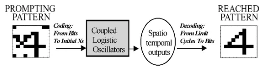
Hình 8 Minh họa sự tự liên kết của các mẫu nhị phân bằng cách sử dụng mạng gồm các RPE ghép nối. Các mẫu đầu vào được ánh xạ tới các điều kiện ban đầu của mạng điểm hút và các mẫu đầu ra được trả về, được mã hóa thông qua các chu trình giới hạn nổi lên trong quá trình hoạt động của mạng về dài hạn (phỏng theo [10])
Trong (11) và (12), k1, k2, c và e là các hằng số thích hợp [6, 12]. Các số hạng và biến còn lại (di, xi , x j, wij , và pi) được định nghĩa cùng với phần trình bày chi tiết các phương trình trong hai đoạn sau.
Phương trình (11) đo lường mức độ bất đồng (di) / mức độ phối hợp, giữa hoạt động cục bộ xi và toàn bộ mạng (tức là tập hợp tất cả các hoạt động nút x j). Theo (11), nếu các hoạt động theo cặp (xi; x j) hầu hết nhất quán với các tương quan dự kiến được nhúng trong các trọng số wij ((6)), thước đo bất đồng di đối với nút i sẽ có giá trị thấp (điều này cho thấy sự phối hợp tốt giữa các nút); ngược lại, nếu các hoạt động quan sát được xi và x j không nhất quán với các tương quan dự kiến wij , thì di sẽ có giá trị cao (điều này cho thấy sự phối hợp kém giữa các nút). Trong (11), hằng số k1 là giá trị trung bình cho các biến x, điều này có nghĩa là các số hạng (xi −k1) và (x j −k1) xuất hiện trong việc đánh giá sự bất đồng di biểu diễn hoạt động của các nút, nhưng được dịch chuyển để có trung bình bằng không.
Dưới sự chỉ huy của thước đo bất đồng di, (12) kiểm soát mức độ trật tự và hỗn loạn trong phần tử phân nhánh i: thước đo di (được đánh giá trước đó thông qua (11)) điều khiển pi lên và xuống, theo các gia số pi được cho bởi (12). Trong phương trình này, c là một hệ số tỷ lệ, và e giúp đưa pi trở lại các giá trị thấp trong quá trình ổn định mạng [6, 12].
Từ những giải thích ở trên, (11) và (12) cùng nhau cho phép làm mất ổn định hành vi có trật tự bất cứ khi nào có một mức độ bất đồng nhất định giữa sự tiến hóa của mạng và các mẫu được nhúng trong các trọng số synap. Sự bất đồng này báo hiệu sự cần thiết của một quá trình tìm kiếm mẫu. Sau đó, sự ổn định của mạng chỉ được khôi phục sau khi quá trình tìm kiếm đạt đến một cấu hình mạng mà đối với nó các hoạt động x nhất quán với các tương quan theo cặp được nhúng trong các trọng số wij.
Tóm lại, (11) và (12) hiện thực hóa một quá trình chuyển đổi tự điều khiển tự trị giữa các trạng thái hỗn loạn và có trật tự. Điều này được minh họa trong Hình 9, trong đó các đặc điểm của hai trạng thái này liên quan đến các khía cạnh khác nhau của hành vi mạng (mức độ phối hợp giữa các nút, phạm vi giá trị của các tham số pi của các nút đệ quy, và mức độ kích thích toàn cục mà các nút đệ quy nhận được) [14].
Cấu hình cuối cùng của các nút đệ quy ghép nối trong một quá trình khôi phục ký ức hoặc nhận dạng mẫu xảy ra khi đạt được một chu trình tự duy trì (phần bên trái của Hình 9). Trong cấu hình này, các hoạt động có trật tự và được phối hợp đảm bảo mức độ kích thích cao cho mỗi nút, và điều này, đến lượt nó, đảm bảo rằng mỗi nút hoạt động trong vùng có trật tự của biểu đồ phân nhánh của nó [14]. Trong Biểu đồ Tập Giới hạn của Hình 7 (Mục 2.5), được sử dụng trong phần thảo luận về mã hóa thông tin thông qua các điểm hút tuần hoàn, chúng ta có thể tìm thấy minh họa cho một số khía cạnh của sự pha trộn giữa trật tự và hỗn loạn được thảo luận ở đây. Trong Hình 7, tất cả các nút ngoại trừ nút số 18, đều đã tìm thấy một chế độ hoạt động ổn định (các nút này đang ở trong trạng thái có trật tự được biểu diễn bởi chu trình bên trái trong Hình 9). Tất cả các nút có trật tự này đều có giá trị pi thấp, như được chỉ ra bởi các hình tam giác, và nút số 18 là nút duy nhất vẫn đang tìm kiếm một điều kiện ổn định (nút cụ thể này đang ở trong trạng thái không có trật tự được biểu diễn bởi chu trình bên phải trong Hình 9).
Thật thú vị khi trình bày ở đây một sự so sánh giữa hiệu suất của các mạng RPE liên kết và các mạng liên kết Hopfield cổ điển như được mô tả trong [6]. Trong
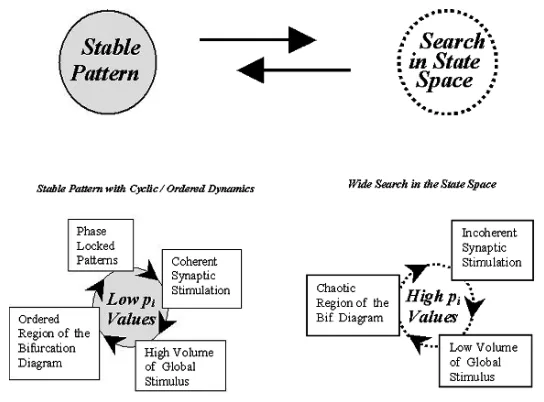
Hình 9 Sơ đồ cho thấy hai trạng thái bổ sung cho nhau được thực hiện bởi các mạng RPE: một là hành vi có trật tự và biểu diễn thông tin có ý nghĩa (phần bên trái), và trạng thái kia là hành vi động lực học phức tạp (cần thiết cho việc tìm kiếm các ký ức được lưu trữ và tìm kiếm các mẫu trong các tác vụ nhận dạng). Mỗi trạng thái có một mức độ tự duy trì nhất định, như được chỉ ra bởi hai chu trình biểu diễn ở phía dưới [14]
nghiên cứu này, cả hai kiến trúc đều lưu trữ các chuỗi nhị phân (ví dụ: hình ảnh), sau đó được khôi phục từ các phiên bản bị biến dạng của chúng. Bảng I trình bày các thước đo hiệu suất thu được cho cả hai kiến trúc.
Bảng trình bày các kết quả hiệu suất với ba mức độ biến dạng đầu vào khác nhau, được đo bằng tỷ lệ phần trăm các bit nhiễu trong mẫu gợi ý mà các cấu trúc liên kết nhận được. Hiệu suất của mỗi kiến trúc liên kết được định lượng dựa trên sai số Hamming trung bình của mẫu được khôi phục (trung bình trên 500 mẫu). Chúng ta có thể thấy từ Bảng I rằng sai số khôi phục trung bình nhỏ hơn nhiều trong các mạng RPE, theo hệ số trong khoảng từ 1.5 đến 2 [6].
Các nhận xét bổ sung về các con số trong bảng này xuất hiện trong phần sau, cùng với phần mô tả về ‘Biểu đồ Hồ sơ Sai số’.
Trước khi kết thúc phần này, chúng tôi muốn đề cập rằng hành vi động lực học phong phú của các mạng thần kinh RPE có vẻ phù hợp để hiện thực hóa kiến trúc trường mô hình hóa thần kinh (neural modeling fields) được mô tả trong chương của Perlovsky. Mạng thần kinh này khám phá các chức năng nhận thức bậc cao hơn. Động lực học của nó được điều khiển bởi bản năng tri thức (knowledge instinct),
Bảng 1 Sai số khôi phục đối với các bộ nhớ liên kết thuộc loại Hopfield và RPE
Sai số Hamming Khôi phục Trung bình trong Kiến trúc Hopfield / Sai số Hamming Khôi phục Trung bình trong Mạng RPE
Nhiễu Đầu vào 10% 0.00% 0.00% Nhiễu Đầu vào 20% 0.33% 0.18% Nhiễu Đầu vào 30% 2.12% 1.26% được biểu diễn về mặt toán học bằng việc tối đa hóa sự tương đồng giữa các biểu diễn thần kinh bên trong và các mẫu trong tín hiệu đầu vào. Logic động (dynamic logic) của mạng thần kinh này khớp các biểu diễn bên trong với các mẫu trong tín hiệu đầu vào với độ bất định động. Độ bất định này được giảm thiểu một cách linh hoạt khi các biểu diễn bên trong được thích nghi tốt hơn với các tín hiệu đầu vào. Các mạng RPE dường như phù hợp một cách tự nhiên để hiện thực hóa logic động. Các giá trị cao của tham số pi có thể tương ứng với bản năng tri thức chưa được thỏa mãn, sự tương đồng thấp giữa các mẫu bên trong và đầu vào, và các trạng thái thần kinh đang trong quá trình chuyển đổi và thích nghi. Các giá trị thấp của tham số pi có thể tương ứng với bản năng tri thức được thỏa mãn, sự tương đồng cao giữa các mẫu bên trong và đầu vào, và các trạng thái thần kinh trong động lực học ổn định. Việc hiện thực hóa logic động bằng RPE này có thể là một chủ đề cho nghiên cứu trong tương lai.
3.3 Định lượng Sức mạnh Liên kết và Độ bền vững trước Đầu vào Nhiễu
Trong Bảng I ở phần trước, hiệu suất của các bộ nhớ liên kết trong việc khôi phục mẫu đã được định lượng thông qua hai loại khoảng cách hoặc biến dạng: một trong số đó đề cập đến đầu vào mà bộ nhớ liên kết nhận được (cột đầu tiên), và loại kia đề cập đến đầu ra được cung cấp bởi tập hợp liên kết (cột thứ hai và thứ ba). Cả hai thước đo này (đầu vào và đầu ra) đều chỉ ra khoảng cách của đầu vào và đầu ra đối với các mẫu nhị phân lý tưởng liên quan đến các truy vấn được xử lý bởi bộ nhớ liên kết. Cụ thể, chúng tôi sử dụng khoảng cách Hamming, thích hợp cho các chuỗi nhị phân [6]. Ở hàng đầu tiên của bảng đó, chúng ta thấy rằng mẫu đầu vào có 10% bit bị biến dạng ở đầu vào, nhưng không có bit nào bị biến dạng ở đầu ra (khôi phục hoàn toàn mẫu đầu vào). Ở hàng thứ hai, độ biến dạng giảm từ 20% ở đầu vào xuống còn 0.33% trong các kiến trúc liên kết Hopfield, và xuống còn 0.18% trong các kiến trúc liên kết RPE. Trong cả hai kiến trúc, những con số này cho thấy sự giảm nhiễu đáng kể, và do đó cho thấy tính hiệu quả của chức năng liên kết.
Để cho phép đặc trưng hóa tổng quát hơn về mối quan hệ giữa nhiễu (hoặc biến dạng) đầu vào và đầu ra, chúng ta có thể sử dụng một công cụ có tên là ‘Biểu đồ Hồ sơ Sai số’ (Error Profile Plot), hay ‘Biểu đồ Sai số’ (Error Plot). Hình 10 cho thấy một trong những biểu đồ này, đối với một mạng RPE thực hiện liên kết. Biểu đồ này cho thấy hiệu suất khôi phục các mẫu được lưu trữ (hoặc sai số trong quá trình khôi phục, được biểu diễn trên trục tung), đối với các mức độ nhiễu đầu vào tùy ý từ 0% đến 100% (được biểu diễn trên trục hoành). Tính đối xứng trong đường cong hình chữ S trong Biểu đồ Hồ sơ Sai số chỉ ra thực tế rằng các ảnh gương của các ký ức là các điểm hút có cùng sức mạnh như chính các ký ức đó, điều này cũng xảy ra trong mạng Hopfield cổ điển [20]. Trong bối cảnh của chúng ta, điều này thực sự được dự đoán trước đối với các mạng trong đó thông tin được mã hóa bằng pha của sự tuần hoàn như được biểu diễn trong Biểu đồ Tập Giới hạn của Hình 7 (trong phần trước). Khi kết thúc quá trình khôi phục, chúng ta chỉ có một tập hợp các nút ‘cùng pha’ và một tập hợp các nút khác ‘ngược pha’. Sự phân đôi mạng này không đủ để phân biệt giữa các ký ức và các ảnh gương của chúng
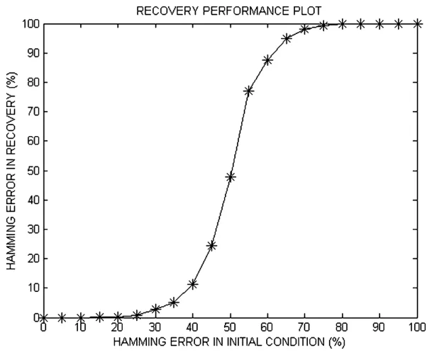
Hình 10 Hồ sơ Sai số (hay ‘Biểu đồ Sai số’) – đường cong này cho thấy mức độ nhiễu hoặc biến dạng đầu vào (trục hoành) ảnh hưởng như thế nào đến hiệu suất khôi phục các mẫu được lưu trữ trong mạng RPE liên kết. Quá trình khôi phục gần như hoàn hảo đối với các sai số đầu vào lên tới 25%. Các sai số được biểu diễn dưới dạng khoảng cách Hamming, được chuẩn hóa theo kích thước mạng (100 nút, vì các chuỗi nhị phân được lưu trữ có 100 bit). Cả hai trục trong biểu đồ đều trình bày tỷ lệ phần trăm [6]
, vì việc phân biệt giữa các số một và số không phụ thuộc vào pha tương đối của sự tuần hoàn trong các chu trình chu kỳ-2. Với điều đó, các ảnh gương được biểu diễn bởi chính xác cùng một sự phân đôi các nút thành hai tập hợp có pha dao động đối lập nhau. Tuy nhiên, nếu muốn, sự mơ hồ giữa các hình ảnh gốc và các ảnh gương của chúng có thể được giải quyết thông qua một nút bên ngoài, mà pha tuần hoàn của nó được lấy làm pha tham chiếu để phân biệt giữa các hình ảnh gốc và các ảnh gương.
Trong [12], chúng ta có một ví dụ thú vị về ứng dụng của Biểu đồ Hồ sơ Sai số. Chúng được sử dụng để chỉ ra rằng sự suy giảm hiệu suất liên kết trong các mạng RPE xảy ra không chỉ với tải lượng các ký ức được lưu trữ [34] mà còn với việc nhân tỷ lệ độ lớn trong các trọng số synap, như được minh họa trong Hình 11.
Sự suy giảm sức mạnh liên kết xảy ra khi tỷ lệ của các trọng số kết nối quá cao hoặc quá thấp. Điều này được chỉ ra bởi sự gia tăng các sai số khôi phục trong Hình 11, đối với các hệ số tỷ lệ khác nhau được áp dụng cho các trọng số synap. Theo cách giải thích của chúng tôi [12], sự suy giảm hiệu suất này liên quan đến việc mất đi sự ghép nối tối ưu: sự ghép nối yếu dẫn đến sự hình thành kém các mẫu tập thể, trong khi độ mạnh ghép nối lớn có thể dẫn đến các gia số pi lớn (theo (11) và (12)) và sự thúc đẩy quá mức tới các trạng thái hỗn loạn. Cả hai trường hợp đều dẫn đến mất hiệu suất. Kết quả này gợi ý rằng các cơ chế điều chỉnh trọng số synap
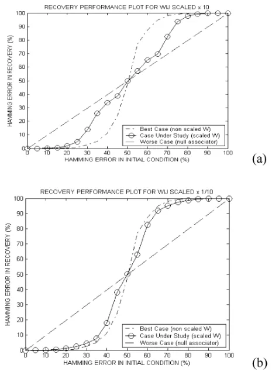
Hình 11 Các Hồ sơ Sai số (sai số Hamming trong mẫu đầu ra so với sai số Hamming trong mẫu nhiễu đầu vào) thu được cho các thang đo độ lớn phân biệt của ma trận W (được tạo thành bởi các wij). Với việc nhân tỷ lệ W, chúng ta rời khỏi hồ sơ sai số hình chữ S ban đầu, vốn đại diện cho hiệu suất tối đa, và chúng ta tiến về phía hiệu suất tối thiểu (đường thẳng nét đứt) [12]. Hệ số tỷ lệ là 10 đối với phần trên và 1/10 đối với phần dưới là rất quan trọng để thúc đẩy độ bền vững cho việc mã hóa và lưu trữ thông tin trong các mạng RPE.
3.4 Đặc trưng hóa cảnh quan của các điểm hút
Các khía cạnh trung tâm của các mạng gồm các nút đệ quy ghép nối liên quan đến động lực học toàn cục của chúng và việc biểu diễn thông tin bao gồm:
– Tập hợp các điểm hút; – Các đặc điểm không gian – thời gian của các điểm hút biểu diễn thông tin được lưu trữ và các điểm hút giả; – Sức mạnh hút tương đối của các điểm hút hiện có.
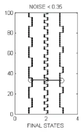
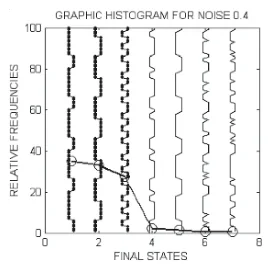
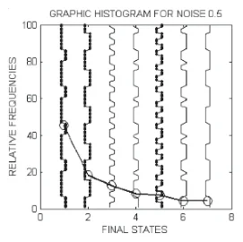
(c) (b) (a)
Hình 12 Ba Biểu đồ Tần suất Đồ họa (Graphic Histograms), cho thấy tần suất tương đối của các mẫu tại đầu ra của mạng liên kết. Đường liền nét nối các vòng tròn là biểu đồ với các tần suất tương đối. Thang đo dọc đi từ tần suất 0% đến 100%. Các mẫu đầu ra là các chuỗi nhị phân (100 bit), được biểu diễn theo chiều dọc và được sắp xếp theo chiều ngang theo tần suất xuất hiện của chúng (1 trên trục hoành biểu thị mẫu có tần suất cao hơn; các số lớn hơn trên trục hoành biểu thị các mẫu có tần suất thấp hơn). Ba biểu đồ cho thấy các mẫu đầu ra nổi lên trong các thí nghiệm và tần suất tương đối của chúng, đối với ba mức độ nhiễu khác nhau được thêm vào các điều kiện ban đầu: (a) biểu diễn các tình huống có mức độ nhiễu thấp được thêm vào mẫu đầu vào; (b) mức độ nhiễu trung bình; và (c) mức độ nhiễu cao. Các mẫu đầu ra tương ứng với các ký ức được lưu trữ được trình bày in đậm, để phân biệt chúng với các điểm hút giả [13]
Biểu đồ Tần suất Đồ họa (Graphic Histograms), như trong Hình 12, là những công cụ hữu ích để hiểu tập hợp các điểm hút [13]. Các biểu đồ này tóm tắt các kịch bản thống kê trong các thí nghiệm khôi phục mẫu. Tên gọi ‘Biểu đồ Tần suất Đồ họa’ xuất phát từ thực tế rằng tần suất xuất hiện của các điểm hút đi kèm với các biểu diễn đồ họa của các mẫu đầu ra tương ứng mà chúng đại diện. Do đó, biểu đồ cung cấp cho chúng ta một bức tranh về cảnh quan của các điểm hút trong mạng đang nghiên cứu, không chỉ cho thấy tần suất tương đối của chúng, mà còn cả những điểm tương đồng và khác biệt giữa các mẫu liên quan.
Biểu đồ Tần suất Đồ họa có thể được sử dụng, ví dụ, để phân tích tập hợp các cấu hình đầu ra cuối cùng nổi lên trong các thí nghiệm ở các mạng RPE hoạt động với các mức độ nhiễu khác nhau trong các mẫu đầu vào. Bằng cách này, chúng ta có thể đánh giá tần suất tương đối xuất hiện của từng mẫu đầu ra (điểm hút), bao gồm cả những mẫu được hoạch định và những mẫu giả, so sánh sức mạnh hút tương đối của chúng, và trong một số trường hợp phát hiện sự nổi lên của sự mất cân bằng mạnh mẽ không mong muốn trong sức mạnh hút tương đối của chúng (điều này xảy ra trong Hình 12c).
Đối với các ứng dụng bộ nhớ liên kết, các điểm hút được biểu diễn trong Biểu đồ Tần suất Đồ họa, Hình 12, tương ứng với các ký ức được lưu trữ trong kiến trúc thần kinh. Đối với nhận dạng mẫu và ra quyết định, các điểm hút này tương ứng với các lớp được biểu diễn bởi mạng.
Các ví dụ được sử dụng ở đây có thuộc tính là việc biểu diễn đồ họa các điểm hút tương đối đơn giản để hiện thực hóa. Điều này xảy ra vì các chu trình giới hạn có ý nghĩa của các nút riêng lẻ chỉ có hai, do chúng biểu diễn thông tin nhị phân (các ký ức được lưu trữ là các chuỗi nhị phân). Bằng cách này, một hình vẽ dọc đơn giản và hẹp, nhảy từ mức này sang mức khác tùy theo giá trị của các bit riêng lẻ, là đủ để biểu diễn rõ ràng các chuỗi nhị phân đầu ra (và, một cách ngầm định, cũng đủ để biểu diễn các điểm hút liên quan mã hóa các chuỗi này, thông qua pha tuần hoàn như trong Hình 7). Với các chuỗi đầu ra này được biểu diễn bằng đồ họa trong biểu đồ tần suất, cạnh nhau như trong Hình 12, chúng ta có thể dễ dàng xác định những điểm tương đồng và khác biệt giữa một số mẫu đầu ra.
4 Kết luận và Triển vọng
Chương này đã thảo luận về hình thức luận, các đặc điểm và thuộc tính chính của các nút đệ quy và các kiến trúc được xây dựng thông qua các nút đệ quy ghép nối. Chúng tôi đã đề cập đến vai trò của các điểm hút, điểm đẩy và sự pha trộn giữa trật tự và hỗn loạn; các điều kiện toán học cho các điểm hút tuần hoàn hợp lệ; các ứng dụng cho các tác vụ liên kết và nhận dạng mẫu. Chúng tôi đã phân tích sự phong phú về mặt động lực học của các mạng gồm các nút đệ quy ghép nối, và việc mã hóa thông tin bằng cách sử dụng các điểm hút tuần hoàn. Các công cụ cụ thể để nghiên cứu và đặc trưng hóa các mạng nút đệ quy đã được thảo luận. Biểu đồ Tập Giới hạn đã được thảo luận để trực quan hóa hoạt động của mạng và các điểm hút đa chiều. Biểu đồ Hồ sơ Sai số đã được thảo luận để đặc trưng hóa thống kê hiệu suất liên kết. Biểu đồ Tần suất Đồ họa đã được thảo luận để tóm tắt dữ liệu trong số lượng lớn các thí nghiệm, trực quan hóa tập hợp các điểm hút trong một mạng nhất định, và đánh giá sức mạnh tương đối của từng điểm hút.
Các hướng đi đầy hứa hẹn cho những nỗ lực trong tương lai bao gồm: nghiên cứu các cấu trúc kết nối bất đối xứng; bắc cầu giữa các nút đệ quy và các nơ-ron phát xung; và sử dụng các nút đệ quy để hiện thực hóa các kiến trúc động lực học nhận thức.
Những phát triển bổ sung về các cấu trúc kết nối bất đối xứng và xử lý synap-đuôi gai phi tuyến có thể đưa các nút đệ quy đến một tập hợp các kiến trúc thần kinh đa dạng hơn, và cung cấp các cơ chế cho dị liên kết và chuyển đổi ngữ cảnh được điều hướng bởi các tín hiệu đến từ các cấp độ phân cấp cao hơn.
Những kết quả ấn tượng gần đây trong giao diện não-máy tính chắc chắn sẽ thúc đẩy việc mô hình hóa các hệ thống thần kinh hướng tới các cách tiếp cận chi tiết hơn, chẳng hạn như các nơ-ron phát xung và các kiến trúc nhận thức. Chúng ta sẽ cần phát triển các mô hình về các chức năng thần kinh ở nhiều cấp độ: các mạng RPE mô hình hóa các chức năng nhận thức ở cấp độ vĩ mô và biểu tượng, và cũng ở cấp độ tín hiệu và các quá trình động lực học, nơi cầu nối với các mô hình phát xung cũng như với các tập hợp K (K sets - được thảo luận trong một số chương của cuốn sách này) có thể rất quan trọng.
Trong số các khả năng sử dụng các nút đệ quy để hiện thực hóa các kiến trúc động lực học nhận thức trong những nỗ lực tương lai, chúng tôi có thể đề cập rằng chương của Perlovsky khám phá kiến trúc trường mô hình hóa thần kinh cho các chức năng nhận thức bậc cao hơn. Các mạng RPE dường như phù hợp một cách tự nhiên để hiện thực hóa logic động của nó. Những nỗ lực trong tương lai có thể khám phá các hiện thực hóa như vậy và sự tương ứng của chúng với hoạt động của não bộ.
Lời cảm ơn Tác giả xin gửi lời cảm ơn đến Đại học Sao Paulo, Brazil, và các cơ quan tài trợ CAPES, FAPESP, FINEP và CNPq đã hỗ trợ một số công trình nghiên cứu được thảo luận trong Chương này.
Tài liệu tham khảo
1. Aihara, K., Takabe, T., Toyoda, M.: Chaotic Neural Networks. Physica Letters A, Vol. 144(6,7 1990), 333–340 2. Adachi, M., Aihara, K.: Associative Dynamics in a Chaotic Neural Network. Neural Networks, Vol. 10(1997), 83–98 3. Caianiello, E. R.: Outline of a Theory of Thought-Processes and Thinking Machines. Journal on Theoretical Biology, Vol. 2(1961), 204–235 4. Del-Moral-Hernandez, E.: Bifurcating Pulsed Neural Networks, Chaotic Neural Networks and Parametric Recursions: Conciliating Different Frameworks in Neuro-like Computing. In: International Joint Conference on Neural Networks 2000, Vol. 6, 423–428, Como, Italy 5. Del-Moral-Hernandez, E.: A Novel Time-Based Neural Coding for Artificial Neural Networks with Bifurcating Recursive Processing Elements. In: International Joint Conference on Neural Networks 2001, Vol. 1, 44–49, Washington, USA 6. Del-Moral-Hernandez, E.: Neural Networks with Chaotic Recursive Nodes: Techniques for the Design of Associative Memories, Contrast with Hopfield Architectures, and Extensions for Time-dependent Inputs. Neural Networks, Vol. 16(2003) 675–682 7. Del-Moral-Hernandez, E., Gee-Hyuk Lee, Farhat, N.: Analog Realization of Arbitrary One Dimensional Maps. IEEE Transactions on Circuits and Systems I: Fundamental Theory and Applications, Vol. 50(Dec.2003), 1538–1547 8. Del-Moral-Hernandez, E.: Contrasting Coupling Strategies in Associative Neural Networks with Chaotic Recursive Processing Elements. In: Neural networks and Computational Intelligence IASTED Conference, NCI 2004, Grindelwald, Switzerland 9. Del-Moral-Hernandez, E., Silva, L. A.: A New Hybrid Neural Architecture (MLP+RPE) for Hetero Association: Multi Layer Perceptron and Coupled Recursive Processing Elements Neural Networks. In: International Joint Conference on Neural Networks 2004, Budapest 10. Del-Moral-Hernandez, E., Sandmann, H., Silva, L. A.: Pattern Recovery in Networks of Recursive Processing Elements with Continuous Learning. In: International Joint Conference on Neural Networks 2004, Budapest 11. Del-Moral-Hernandez, E.: Non-Homogenous Structures in Neural Networks with Chaotic Recursive Nodes: Dealing with Diverse Multi-assemblies Architectures, Connectivity and Arbitrary Bifurcating Nodes. In: International Joint Conference on Neural Networks 2005, Montreal 12. Del-Moral-Hernandez, E.: Non-homogenous Neural Networks with Chaotic Recursive Nodes: Connectivity and Multi-assemblies Structures in Recursive Processing Elements Architectures, Neural Networks, Vol. 18(n.5–6, 2005), 532–540 13. Del-Moral-Hernandez, E.: Fragmented Basins of Attraction of Recursive Processing Elements in Associative Neural Networks and its Impact on Pattern Recovery Performance. In: International Joint Conference on Neural Networks 2006, Vancouver 14. Del-Moral-Hernandez, E.: Chaotic Searches and Stable Spatio-temporal Patterns as a Naturally Emergent Mixture in Networks of Spiking Neural Oscillators with Rich Dynamics. In: International Joint Conference on Neural Networks 2006, Vancouver 15. Farfan-Pelaez, A., Del-Moral-Hernandez, E., Navarro, J. S. J., Van Noije, W.: A CMOS Implementation of the Sine-circle Map. In: 48th IEEE International Midwest Symposium on Circuits & Systems, Cincinnatti, 2005 16. Farhat, N. H., S-Y Lin, Eldelfrawy, M.: Complexity and Chaotic Dynamics in Spiking Neuron Embodiment, SPIE Critical Review, Vol. CR55 (1994), 77-88, SPIE, Bellingham, Washington 17. Farhat, N. H. Del-Moral-Hernandez, E.: Logistic Networks with DNA-Like Encoding and Interactions. Lecture Notes in Computer Science, Vol. 930 (1995), 214–222. Berlin: SpringerVerlag 18. Freeman, W. J.: Tutorial on Neurobiology: From Single Neuron to Brain Chaos. International Journal of Bifurcation and Chaos, Vol. 2(3, 1992), 451–482 19. Gerstner, W., Kistler, W. M.: Spiking Neuron Models: Single Neurons, Populations, Plasticity, Cambridge University Press, Cambridge, UK (2002)
20. Haykin, S.: Neural Networks: a Comprehensive Foundation, 2nd edn., Prentice Hall, NJ: Upper Saddle River (1999) 21. Hilborn, R.C.: Chaos and Nonlinear Dynamics: an Introduction for Scientists and Engineers, New York, Oxford University Press (1994) 22. Hopfield, J. J.: Neural Networks and Physical Systems with Emergent Collective Computational Abilities. Proceedings of the National Academy of Sciences, USA, Vol. 79(1982), 2554–2558 23. Hopfield, J. J.: Pattern Recognition Computation Using Action Potential Timing for Stimulus Representation. Nature, Vol. 376 (1995), 33–36 24. Ishii, S. et al.: Associative Memory Using Spatiotemporal Chaos. In: International Joint Conference on Neural Networks 1993, Vol. 3, 2638–2641, Nagoya 25. Kaneko, K.: Overview of Coupled Map Lattices. Chaos, Vol. 2(3, 1992), 279–282 26. Kaneko, K.: The Coupled Map Lattice: Introduction, Phenomenology, Lyapunov Analysis, Thermodynamics and Applications. In Theory and Applications of Coupled Map Lattices, 1–49. John Wiley & Sons, Chichester (1993) 27. Kaneko, K., Tsuda, I.: Complex Systems: Chaos and Beyond: a Constructive Approach with Applications in Life Sciences, Springer-Verlag (2001) 28. Kandel, E. R., Schwartz, J. H., Jessell, T. M.: Principles of Neural Science, Appleton & Lange, Norwalk, Connecticut (1991) 29. Kelso, J. A. S.: Dynamic Patterns - the Self-Organization of Brain Behavior, The MIT Press, MA: Cambridge (1995) 30. Kosko, B.: Bidirectional Associative Memories. IEEE Transactions on Systems, Man, and Cybernetics, Vol. 18 (Jan-Feb 1988), 49–60 31. Kozma, R., Freeman, W.J.: Encoding and Recall of Noisy Data as Chaotic Spatio-Temporal Memory Patterns in the Style of the Brains. In: International Joint Conference on Neural Networks 2000, Vol. 5, 33–38, Como, Italy 32. Kozma, R., Freeman, W.J.: Control of Mesoscopic/Intermediate-Range Spatio-Temporal Chaos in the Cortex. In: American Control Conference 2001, Vol. 1, 263–268 33. Lysetskiy, M., Zurada, J.M., Lozowasky, A.: Bifurcation-Based Neural Computation. In: Inte
Trao Ý nghĩa cho Các Chu trình để Vượt qua Những Hạn chế của Điểm hút Cố định
Colin Molter, Utku Salihoglu và Hugues Bersini
Tóm tắt Chương này tập trung vào các bộ nhớ liên kết trong các mạng thần kinh nhân tạo hồi quy sử dụng cùng loại nơ-ron rất đơn giản thường thấy trong các mạng thần kinh. 25 năm qua đã dành phần lớn nỗ lực nghiên cứu vào việc mã hóa thông tin trong các điểm hút cố định. Từ góc độ nhận thức hoặc sinh lý thần kinh, sự lựa chọn này khá tùy tiện. Bài viết này biện minh cho sự cần thiết phải chuyển sang một cơ chế mã hóa khác khai thác các chu trình giới hạn và động lực học phức tạp ở nền tảng thay vì các điểm cố định. Người ta chỉ ra cách các điểm hút này khắc phục được ở nhiều khía cạnh những hạn chế của các điểm cố định: tương ứng tốt hơn với các dữ kiện sinh lý thần kinh, tăng khả năng mã hóa, cải thiện độ bền vững trong giai đoạn truy xuất, giảm số lượng các điểm hút giả. Tuy nhiên, làm thế nào để khai thác và học các chu trình này nhằm mã hóa thông tin liên quan vẫn là một vấn đề bỏ ngỏ. Trong bài viết này, hai chiến lược học tập được đề xuất, thử nghiệm và so sánh: một chiến lược khá cổ điển, gợi nhớ nhiều đến việc học Hebb có giám sát thông thường, chiến lược kia khá độc đáo vì cho phép điểm hút mã hóa được tự lựa chọn bởi chính mạng. Các thí nghiệm máy tính của hai chiến lược học tập này sẽ được trình bày và giải thích. Cơ chế học thứ hai sẽ được ủng hộ cả vì tính liên quan cao về mặt nhận thức lẫn vì hiệu suất vượt trội hơn nhiều trong việc mã hóa và truy xuất thông tin. Vì loại động lực học quan sát được trong các thí nghiệm của chúng tôi (điểm hút tuần hoàn khi một kích thích được trình bày và một sự hỗn loạn nền yếu khi không có kích thích đó) gợi nhớ một cách trung thực đến dữ liệu sinh lý thần kinh và mặc dù cho đến nay chưa tìm thấy ứng dụng trực tiếp nào, chúng tôi giới hạn sự biện minh của mình ở sự ánh xạ định tính này với các quan sát não bộ và nhu cầu khám phá tốt hơn cách một thiết bị vật lý như bộ não có thể lưu trữ và truy xuất một lượng thông tin khổng lồ một cách bền vững.
1 Giới thiệu
1.1 Khoa học Thần kinh Tính toán và Trí tuệ Nhân tạo
Khoa học thần kinh tính toán nhằm mục đích mô hình hóa và/hoặc giải thích các chức năng của não bộ dựa trên các bằng chứng sinh lý thần kinh. Ý tưởng cơ bản là chúng có thể cung cấp các dự đoán và/hoặc lý thuyết để hỗ trợ các nhà khoa học thần kinh trong công việc của họ. Kể từ mô hình nơ-ron do Hodgkin-Huxley (1952) phát triển, các mạng thần kinh đóng vai trò trung tâm trong lĩnh vực này. Mục tiêu của Trí tuệ Nhân tạo (AI) rộng hơn, một trong số đó là tìm kiếm các cơ chế để mang lại nhiều sức mạnh và “trí thông minh” hơn cho các thiết bị nhân tạo. Một cách hiển nhiên là tìm kiếm gợi ý từ bộ não. Kể từ mô hình của McCulloch và Pitts (1942), các mạng thần kinh cũng đã trở thành một trong những mô hình nền tảng trong AI. Lĩnh vực chung này làm cho ranh giới giữa AI và khoa học thần kinh tính toán trở nên mơ hồ (Hình 1). Việc thiếu một ranh giới rõ ràng đôi khi có thể gây hiểu lầm: các kết quả thu được từ lĩnh vực AI phải được đọc một cách thận trọng khi áp dụng vào khoa học thần kinh.
Chúng tôi tin rằng khái niệm điểm hút cố định là một trong những khái niệm gây hiểu lầm này. Lần đầu tiên được phát hiện trong lĩnh vực AI, chúng nhanh chóng trở thành một mô hình chuẩn mực về cách bộ não lưu trữ thông tin. Mặc dù không có bằng chứng nào về các điểm hút như vậy trong não bộ và dung lượng thu được rất kém, câu chuyện thành công này đã làm thiên lệch mạnh mẽ cả cộng đồng khoa học thần kinh lẫn cộng đồng AI.
1.2 Các Điểm hút Cố định và Mạng Hopfield
Kể từ các công trình tiên phong của Amari, Grossberg và Hopfield [1, 2, 3], chế độ được ưu tiên để mã hóa thông tin là các điểm hút cố định. Trong một công trình mang tính bước ngoặt, Hopfield đã chỉ ra rằng một tập hợp nhỏ các mẫu ξμ có thể được lưu trữ trong một mạng thần kinh hồi quy hoàn toàn bằng một quy tắc chỉ định kiểu Hebb xác định các trọng số kết nối: wij = 1 N
p μ=1 ξμ i ξμ j và wii = 0. Hơn nữa, ông đã chứng minh rằng trong các mạng có các kết nối đối xứng và không có tự kết nối này, một hàm Lyapunov1 có thể được định nghĩa trên toàn bộ không gian trạng thái. Các mẫu đã học là các cực tiểu cục bộ của hàm này và hút các phiên bản nhiễu của mẫu về trạng thái ổn định của chúng.
Trí tuệ Nhân tạo
Ứng dụng
Khoa học não bộ
Đầu vào cảm giác
Đầu vào Đầu ra
1 2 i N bộ dao động
ECII
bộ dao động Tính dẻo
Ca3
Thế giới và xã hội
Khoa học thần kinh tính toán
Hình 1 Khoa học thần kinh tính toán và AI. Các đường nét liền biểu diễn luồng dữ liệu được sử dụng để làm nền tảng cho các lĩnh vực, các đường nét đứt biểu diễn các kết quả hữu ích từ lĩnh vực đó. Độ mạnh của luồng được biểu diễn bằng độ dày của đường nét
1 tức là, một hàm bị chặn dưới có đạo hàm giảm dần theo thời gian và do đó có thể được xem như một “hàm năng lượng”.
Cơ chế lưu trữ phân tán bên dưới các mạng điểm hút này làm cho hệ thống rất có khả năng chịu đựng trước hư hỏng một phần hoặc sự suy giảm trong kết nối của chúng. Vì hai đặc tính này cũng được cho là tồn tại trong bộ não thực, việc mã hóa ký ức trong các điểm hút cố định đã trở thành quan điểm được chấp nhận về cách bộ não lưu trữ thông tin.
Nhiều công trình lý thuyết và thực nghiệm đã chỉ ra và thảo luận về khả năng lưu trữ hạn chế của các mạng điểm hút này ([4, 5, 6, 7] và [8] để xem tổng quan). Điều này giải thích sự vắng mặt của các ứng dụng thực tế và sự mất hứng thú từ cộng đồng AI. Tuy nhiên, các điểm hút cố định vẫn là hình ảnh đại diện cho cách bộ não lưu trữ thông tin.
1.3 Tính Phổ biến của Các Chu trình
Việc mã hóa thông tin trong các điểm hút cố định dẫn đến động lực học được đảm bảo ổn định của các mạng kiểu Hopfield. Xét đến tính phổ biến của động lực học phức tạp trong thế giới thực, điều này có vẻ rất không tự nhiên. Cụ thể hơn, trong não bộ, nhiều báo cáo sinh lý thần kinh (ví dụ: [9, 10, 11, 12, 13]) có xu hướng chỉ ra rằng động lực học của não bộ được đặc trưng bởi các chế độ tuần hoàn và hỗn loạn yếu.
Phù hợp với những kết quả này, trong chương này chúng tôi đề xuất ánh xạ các kích thích tới các điểm hút chu trình giới hạn không gian – thời gian của động lực học mạng. Một kích thích đã học không còn được kỳ vọng sẽ đưa mạng vào một trạng thái ổn định. Thay vào đó, kích thích được kỳ vọng sẽ đưa mạng vào một quỹ đạo tuần hoàn không gian – thời gian cụ thể. Quỹ đạo tuần hoàn này vẫn được coi là một điểm hút vì tính khả năng truy xuất theo nội dung được kỳ vọng: trước khi trình bày kích thích, mạng có thể đi theo một quỹ đạo khác và kích thích có thể bị hỏng bởi nhiễu.
Vấn đề đầu tiên chúng ta phải đối mặt là sự khó khăn trong việc thực hiện các phân tích lý thuyết và việc không thể đưa ra các chứng minh toán học trực tiếp. Các mạng này chủ yếu phải được phân tích bằng thực nghiệm. Cách duy nhất khả thi để chứng minh rằng một điểm hút nhất định có khả năng truy xuất theo nội dung là thông qua các phép tính thực nghiệm sâu rộng. Các kết quả thành công thu được có xu hướng chứng minh rằng các hàm Lyapunov có thể được tìm thấy xung quanh các điểm hút tuần hoàn2. Tuy nhiên, sự hiện diện của động lực học hỗn loạn ở nhiều phần khác của không gian trạng thái sẽ ngăn cản việc định nghĩa các hàm này trên toàn bộ không gian trạng thái. Chúng chỉ có thể được định nghĩa trong các tập hợp con nhỏ của không gian trạng thái. Điều này làm cho việc tìm kiếm chúng trở nên khó khăn. Chúng vẫn cần phải được tìm ra.
Việc đưa động lực học phức tạp hơn vào mạng dẫn đến sự xuất hiện của động lực học hỗn loạn. Để cho phép áp dụng các công cụ toán học từ lý thuyết hỗn loạn, hàm kích hoạt của mỗi đơn vị đã được chọn là hàm liên tục. Nhược điểm là các điểm hút liên tục và khó so sánh (ví dụ, 0.4 có khác với 0.45 hay không?). Để dễ so sánh, đầu ra được lọc và biến đổi thành các mẫu bit (hoặc ký hiệu): một đơn vị là đang hoạt động hoặc không hoạt động. Sau khi lọc, các phân tích ký hiệu
2 Để thu được hàm này, không gian trạng thái sẽ phải được triển khai theo thời gian sao cho chu trình sẽ tương đương với một điểm cố định.
có thể được thực hiện để đặc trưng hóa động lực học. Khoảng cách giữa hai mẫu sẽ được đo bằng khoảng cách Hamming trên đầu ra đã lọc. Nó xác định một thước đo tự nhiên thu được bằng cách đếm số lượng trạng thái khác nhau giữa chúng.
1.4 Học tập Hebb
Các mạng điểm hút cố định trở nên nổi tiếng không chỉ vì chúng xác định một cách để mã hóa các bộ nhớ liên kết, mà còn vì quy tắc học được sử dụng để mã hóa các ký ức này là hợp lý về mặt sinh lý thần kinh, một lần nữa củng cố sự tương đồng với não bộ.
Tính dẻo synap hiện nay được chấp nhận rộng rãi như một cơ chế cơ bản làm nền tảng cho việc học tập và trí nhớ. Có bằng chứng thực nghiệm cho thấy hoạt động của nơ-ron có thể ảnh hưởng đến độ mạnh synap, thông qua cả sự tăng cường dài hạn (long-term potentiation) và sự ức chế dài hạn (long-term depression) [14]. Dự báo trước sự kiện sinh học này, Hebb đã gợi ý cách hoạt động và kinh nghiệm huấn luyện có thể làm thay đổi hiệu lực synap [15]. Kể từ khi được Hopfield sử dụng, quy tắc học như vậy đã trở nên thiết yếu cho việc xây dựng hầu hết các mô hình bộ nhớ liên kết (trong số đó có: [2, 16, 17, 18, 19, 20, 21]). Trong các mô hình như vậy, mạng thần kinh ánh xạ cấu trúc thông tin chứa trong môi trường bên ngoài và/hoặc bên trong vào các điểm hút được nhúng.
Tuy nhiên, người ta đã quan sát thấy [22, 23] rằng trong một số điều kiện, cửa sổ thời gian của tính dẻo synap ở các tế bào tháp trong điều kiện kích thích uốn ván (tetanic stimulus) được mô tả trung thực hơn bởi một hàm bất đối xứng: kết nối giữa một tế bào trước synap và một tế bào sau synap nhận được sự củng cố nhiều nhất khi tế bào sau synap phát xung ngay sau tế bào trước synap. Áp dụng cho các nơ-ron phát xung, điều này dẫn đến quy tắc học tính dẻo phụ thuộc thời điểm phát xung (STDP). Trong AI, nhiều loại quy tắc học Hebb phụ thuộc thời gian đã được đề xuất, chủ yếu cho các ứng dụng học chuỗi (ví dụ, khi áp dụng học tập Hebb cổ điển trong mạng thần kinh nhân tạo trễ thời gian – ví dụ: [24]). Điểm quan trọng là bằng cách áp dụng quy tắc học bất đối xứng theo thời gian, các kết nối mạng trở nên bất đối xứng và không còn có thể định nghĩa một hàm năng lượng áp dụng cho toàn bộ không gian trạng thái. Thực tế, chúng tôi đã chỉ ra [25] rằng loại quy tắc học này ngăn cản mạng ổn định: học tập bất đối xứng có thể được xem như một con đường dẫn đến động lực học hỗn loạn.
2 Trao Ý nghĩa cho Các Chu trình
Ở cấp độ vĩ mô, hoạt động của não bộ được đặc trưng bởi nhiều loại nhịp điệu dao động ở các tần số khác nhau [26]. Trong những dao động này, các quần thể nơ-ron khác nhau có thể phát xung đồng bộ ở các pha khác nhau. Nếu hoạt động thần kinh đồng bộ được cho là đóng vai trò quan trọng trong việc liên kết nhiều vùng não và giải quyết bài toán gắn kết (binding problem) [27], thì sự tồn tại của việc phát xung quần thể ở các pha khác nhau (khóa pha) đã được gợi ý là phản ánh sự tồn tại của mã hóa theo thời gian trong não bộ.
Sự tương đồng với mô hình đơn giản của chúng tôi không phải là trực tiếp. Thực tế, trong mô hình hóa, các dao động đã mất đi ý nghĩa ban đầu của chúng (không còn một tần số duy nhất điều khiển mạng như một máy tạo nhịp). Điều còn lại giống hệt nhau là sự hiện diện của các quần thể đơn vị được kích hoạt đồng bộ và được khóa pha với nhau.
Não bộ xử lý thông tin ở nhiều cấp độ. Câu hỏi khoa học quan trọng sau đó là biết loại quá trình nào sẽ đòi hỏi các điểm hút tuần hoàn. Để dễ so sánh với các điểm hút cố định, ở đây chúng tôi đề xuất sử dụng chúng làm bộ nhớ liên kết. Trong cơ chế này, toàn bộ chu trình biểu diễn thông tin. Tuy nhiên, các chu trình có thể được sử dụng theo nhiều cách khác nhau. Ví dụ, mỗi chu trình con có thể chứa thông tin độc lập. Trong trường hợp này, vai trò của chu trình sẽ là liên kết nhiều mẩu thông tin lại với nhau. Hệ thống được trình bày chi tiết dưới đây có thể được sử dụng để xử lý các trí nhớ làm việc.
2.1 Chu trình là Thông tin
Thông tin được lưu trữ vào mạng bao gồm một tập hợp các cặp dữ liệu. Mỗi dữ liệu được cấu thành bởi một kích thích bên ngoài và một chuỗi các mẫu mà mạng được kỳ vọng sẽ lặp qua khi kích thích nuôi mạng (chuỗi này tương ứng với điểm hút chu trình giới hạn). Theo truyền thống, thông tin cần lưu trữ được cài đặt bằng một cơ chế có giám sát (ví dụ: [2]) hoặc được khám phá tại chỗ bởi một phiên bản không giám sát, tiết lộ một số quy luật thống kê trong dữ liệu được trình bày cho mạng (ví dụ: [28]).
Trong chương này, hai dạng học tập khác nhau được nghiên cứu và so sánh. Trong dạng thứ nhất, thông tin cần học (kích thích bên ngoài và điểm hút chu trình giới hạn) được chỉ định trước và được cài đặt như là kết quả của một thuật toán có giám sát cổ điển (Hình 2B). Tuy nhiên, việc học có giám sát như vậy luôn đặt ra những vấn đề nghiêm trọng cả ở cấp độ sinh học, do bản chất từ trên xuống của nó, và ở cấp độ nhận thức. Ai sẽ chịu trách nhiệm nhìn vào bên trong bộ não của người học, tức là quyết định thông tin để liên kết với kích thích bên ngoài và thực hiện sự giám sát trong suốt tác vụ học tập?
Để trả lời ít nhất là câu hỏi cuối cùng, trong dạng học tập thứ hai được đề xuất ở đây, ngữ nghĩa của các điểm hút được liên kết với kích thích đầu vào được để không quy định trước: mạng được dạy để liên kết các kích thích bên ngoài với các điểm hút nguyên bản, không được chỉ định tiên nghiệm (Hình 2C). Quan điểm này vẫn phù hợp với một niềm tin triết học rất cổ xưa gọi là thuyết kiến tạo (constructivism), vốn đã được hiện đại hóa theo thuật ngữ mạng thần kinh bởi một số tác giả (trong số đó có [29, 30, 31]). Một dạng vận hành đã đạt được sự phổ biến lớn như một hiện thực hóa mạng thần kinh của các thuật toán phân cụm thống kê [3, 32]. Để phân biệt giữa hai quy trình học tập, quy trình thứ nhất được gọi là “giám sát ngoài” (out-supervised), vì thông tin được chỉ định hoàn toàn từ bên ngoài. Ngược lại, quy trình thứ hai được gọi là “giám sát trong” (in-supervised), vì việc học ánh xạ các kích thích tới các điểm hút tuần hoàn “bắt nguồn” từ những điểm hút được mạng đề xuất một cách tự phát.
Điểm hút cố định
A
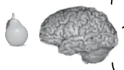
B
Điểm hút chu kỳ
thời gian
C
Hình 2 Cách các ký ức được biểu diễn trong động lực học não bộ. Quan điểm truyền thống cho rằng thông tin ổn định được mã hóa trong các điểm hút cố định (A). Trong chương này, chúng tôi gợi ý rằng các điểm hút tuần hoàn mang lại một giải pháp tốt hơn. Vấn đề nảy sinh là xác định các mẫu khác nhau được bao hàm trong một chu trình. Một giải pháp hiển nhiên là xác định chúng tiên nghiệm, ở đây bằng cách gán một chữ cái cho mỗi chu trình (B). Một giải pháp khác được đề xuất ở đây là để mạng tự chọn định nghĩa về biểu diễn bên trong của đối tượng (C). Các lớp biểu diễn trạng thái bên trong của một mạng thần kinh hồi quy
Một cách khá tự nhiên, chúng tôi chỉ ra rằng việc học “giám sát trong” này dẫn đến khả năng lưu trữ tăng lên.
2.2 Chu trình con là Thông tin
Vào những năm 1980, hai nhà nghiên cứu người Anh tên là Baddeley và Hitch đã đặt ra thuật ngữ “trí nhớ làm việc” (working memory) cho khả năng lưu giữ tạm thời nhiều sự kiện hoặc suy nghĩ trong trí nhớ trong khi giải quyết một vấn đề hoặc thực hiện một nhiệm vụ. Làm thế nào bộ não xoay sở để tung hứng đồng thời nhiều mẩu thông tin mà không trộn lẫn chúng vẫn là một câu hỏi bỏ ngỏ.
Theo Idiart và Lisman [33], một manh mối quan trọng đã được cung cấp bởi các bản ghi não bộ cho thấy một số vùng của vỏ não có dao động kép, trong đó một dao động tần số thấp trong dải tần số theta được chia nhỏ thành các chu trình con bởi một dao động tần số cao trong dải gamma [34]. Họ đề xuất rằng tập hợp con các tế bào phát xung đồng bộ trong một chu trình con gamma đại diện cho một trí nhớ ngắn hạn. Thực tế là 7 dao động gamma có thể xảy ra trong một dao động theta sẽ giải thích dung lượng nhỏ được quan sát thấy trong trí nhớ làm việc (7 ± 2 mục) [35].
Mô hình trí nhớ làm việc này xuất hiện như một ví dụ khả dĩ về việc nhiều bit thông tin được nhúng trong một chu trình. Trong Hình 3B, một chu trình có kích thước 4 được biểu diễn trong đó mỗi chu trình con mã hóa một thông tin cần thiết để thực hiện một nhiệm vụ (ở đây là nấu một món ăn). Theo quan điểm này, việc giải mã thông tin được lưu giữ bởi mỗi chu trình có thể được thực hiện dễ dàng thông qua một mạng truyền thẳng (feedforward network) đơn giản. Trong Hình 3A, thông tin được lưu giữ trong mỗi chu trình con bị chồng chất lên nhau. Điều này có vẻ phức tạp hơn (và bất khả thi trong
Điểm hút cố định Điểm hút chu kỳ
A B
thời gian ?
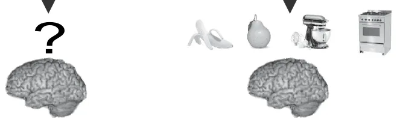
Hình 3 Trong các tác vụ trí nhớ làm việc, nhiều thông tin phải được lưu giữ đồng thời. Trong (A), nhiều mẩu thông tin bị chồng chất trong cùng một mẫu tĩnh. Điều này làm cho việc giải mã gần như bất khả thi. Trong (B), nhiều mẩu thông tin xuất hiện dưới dạng các chu trình con. Các mẫu này sau đó có thể được giải mã dễ dàng thông qua một mạng truyền thẳng. Các lớp biểu diễn trạng thái bên trong của một mạng thần kinh hồi quy một số trường hợp) để một mạng truyền thẳng giải tương quan tất cả thông tin được lưu giữ trong mẫu đơn lẻ này.
3 Một Mô hình Đơn giản cho Các Bộ nhớ Liên kết
3.1 Mạng Thần kinh
Mạng được kết nối đầy đủ. Sự kích hoạt của mỗi nơ-ron là một hàm của tác động từ các nơ-ron khác và của một kích thích bên ngoài. Sự kích hoạt f của các nơ-ron là liên tục và được cập nhật đồng bộ theo từng bước thời gian rời rạc. Mô tả toán học của một mạng như vậy là rất cổ điển. Giá trị kích hoạt của một nơ-ron xi tại một bước thời gian rời rạc n + 1 là:
xi(n + 1) = f (g neti(n)) neti(n) = N j=1 wij x j(n) + M s=1 wisιs (1)
trong đó N là số lượng nơ-ron, M là số lượng đơn vị cấu thành kích thích, g là tham số độ dốc, wij là trọng số giữa các nơ-ron j và i, wis là trọng số giữa đơn vị kích thích bên ngoài s và nơ-ron i và ιs là đơn vị s của kích thích bên ngoài. Hàm kích hoạt bão hòa f được lấy là liên tục (ở đây là tanh) để tạo điều kiện nghiên cứu các thuộc tính động lực học của mạng.
Kích thước của mạng, N, và kích thước của kích thích, M, đã được đặt bằng 25 trong bài viết này để dễ đọc. Tất nhiên, kích thước này có tác động đến cả khả năng mã hóa và động lực học nền. Tác động này sẽ không được thảo luận. Một tác động khác không được thảo luận ở đây là giá trị của tham số độ dốc g, được đặt bằng 3 trong phần sau3.
Khi lưu trữ thông tin trong các điểm cố định, quy tắc cập nhật theo thời gian có thể là bất đồng bộ hoặc đồng bộ một cách tùy ý. Điều này không còn đúng khi lưu trữ thông tin trong các điểm hút tuần hoàn, đối với chúng việc cập nhật nhất thiết phải là đồng bộ: hoạt động của mạng tại một bước thời gian nhất định là một hàm của bước thời gian liền trước.
Để so sánh các trạng thái bên trong liên tục của mạng với các mẫu bit, một lớp lọc dựa trên hàm dấu (sign function) được thêm vào. Nó cho phép chúng ta thực hiện các khảo sát ký hiệu trên các điểm hút động lực học.
3.2 Nhiệm vụ Học tập
Hai nhiệm vụ học tập rất khác nhau được đề xuất ở đây. Cả hai đều bao gồm việc lưu trữ một tập hợp q kích thích bên ngoài trong các chu trình không gian – thời gian của động lực học bên trong mạng. Tập dữ liệu được viết là:
* D1, . . . , Dq+
D =
(2)
trong đó mỗi dữ liệu Dμ được định nghĩa bởi một cặp bao gồm:
• một mẫu χμ tương ứng với kích thích bên ngoài nuôi mạng; • một chuỗi các mẫu ςμ,i, i = 1, . . . ,lμ để lưu trữ trong một điểm hút động lực học.
Dμ =
χμ , (ςμ,1, . . . , ςμ,lμ)
μ = 1, . . . , q (3)
trong đó lμ là chu kỳ của mẫu μ có thể thay đổi từ dữ liệu này sang dữ liệu khác. Mỗi mẫu μ được định nghĩa bằng cách gán các giá trị số cho tất cả các nơ-ron:
χμ = {χμ i , i = 1, . . . , M} với χμ i ∈{−1, 1} ςμ,k = {ςμ,k i ∈{−1, 1} (4)
i , i = 1, . . . , N} với ςμ,k
3.3 Các Quy trình Học tập
3.3.1 Thuật toán Học “Giám sát Ngoài” (Out-supervised)
Nhiệm vụ học tập gắn liền với thuật toán này rất đơn giản và bao gồm việc lưu trữ tập dữ liệu được xác định rõ cho trong (2). Mỗi dữ liệu được lưu trữ trong mạng là
3 Tác động của tham số này đã được thảo luận trong [36]. Họ đã chứng minh cách tham số độ dốc có thể được sử dụng như một con đường dẫn đến hỗn loạn.